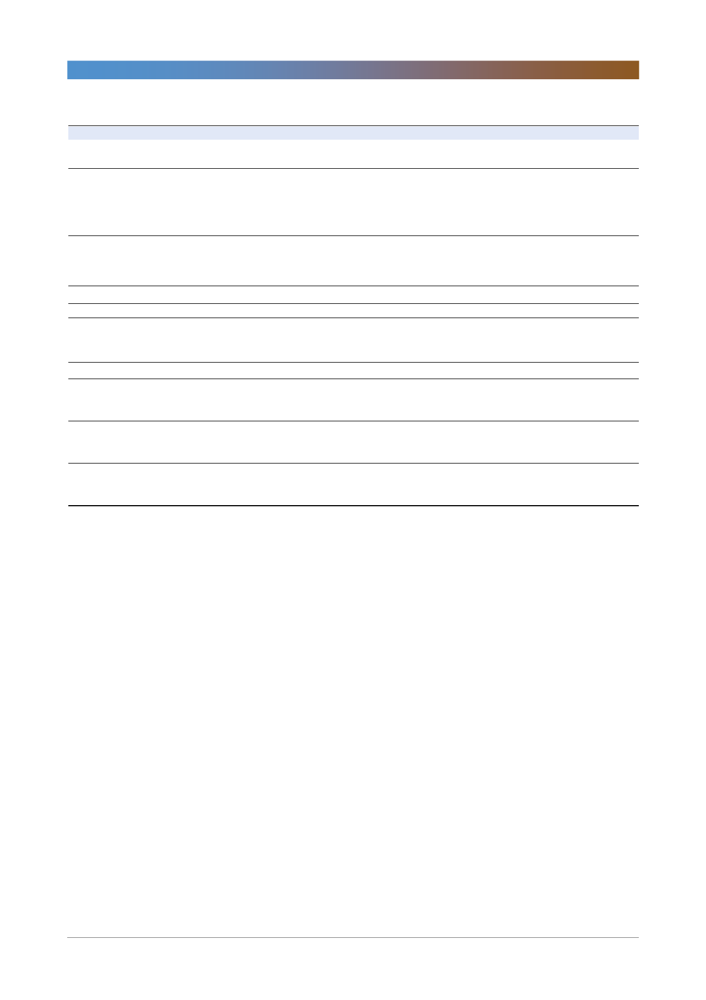

NAVER(035420)
<표 6> LINE 컨퍼런스 주요 내용
구분
Key note
주요내용
- LINE의 자체 블록체인 플랫폼 위에서 게임, 공유경제,
엔터테인먼트, 미디어, 커머스에 적용할 예정
Entertainment
- MUSIC Video 2018년 가을 출시 예정
- LINE Ticket 2018년 가을 출시 예정
- LINE Manga 2018년 7월 독립 법인 분사 예정
- LINE Quick Game 서비스 2018년 여름 도입 예정
- Smart Channel 2018년 도입 예정
Overseas (Taiwan) - 2018년 11월 선거 활동에 LINE활용 예정
Overseas (Thailand)
Biz
Commerce
- LINE Shopping 2018년 가을 오프라인 확장 예정
- LINE Pay for ID 결제방식 2018년 가을 도입 예정
- ‘Shopping Lens’, ‘LINE Travel’ 6월 28일 출시
Media
- ‘My News’ 기능 출시 예정
AI / Clova
- 가전제품 연동 예정
- Clova 기술 대중 및 3rd-party에 개방 예정
- ‘Clova Desk’ 2018년 겨울 출시 예정
주요지표
[LINE Music] MAU 970만 명 (2018.05)
[LINE BGM] 830 만 명 이상의 BGM 유저 (2018.05)
[LINE Live] MAU 3,300만 명
[LINE Manga] 2,000만 계정(2018.05)
[LINE Game] 누적 다운로드 8억 명 이상 (2018.06)
[LINE] 모바일 인터넷 유저 중 LINE 유저 비중 95
[LINE Pay] 290만 가입자 보유 (2018.05)
[LINE Shopping] 900만 유저 및 40% retention rate 달성
[LINE Today] 1,800만 유저 달성
[LINE] 4,200만 유저
[AD] 광고 매출 비중 2012년 6%에서 2017년 40%로 증가
[LINE Shopping] GMV Q/Q 27.2% 가입자 수 2,000만 명
(2018년 6월), MAU 1,100만 명 (2018년 1월)
[LINE News] MAU 6,300만 명 (2018.6)
[Clova] 1년 간 Clova 유저수 10배 성장
Fintech
- 자산관리, 보험서비스 출시 예정
- 가상화폐 거래소, 'BITBOX' 2018년 7월 오픈 예정
Pay
- SMB 매장에 QR코드 기반 결제 앱 ‘LINE Pay for
- Merchants’ 6월 28일부터 배포 예정
자료: LINE, 한국투자증권
[LINE Pay] LINE Pay 글로벌 월 거래액 약 125억 엔
[LINE Pay Japan] 작년 대비 송금 횟수 2.8배 증가, LINE
Pay 결제 금액 2.5배 증가 (2018.04)
기업개요 및 용어해설
NAVER는 일평균 약 1,800만명의 이용자가 방문하는 검색 점유율 1위의 국내 대표 인터넷 검색포털. 사업 부문은 광고
(검색, 디스플레이), 콘텐츠, 기타로 분류되며 2015년 기준 70% 이상의 매출이 광고 부문에서 발생. 자회사 LINE은 일
본을 포함한 4개국(대만, 태국, 인도네시아)의 주요 메신저로 2억명 이상의 MAU 보유. 게임, 광고, 이모티콘 등이 주요
매출원이며 최근에는 태국과 인도네시아 O2O 시장 진출 또한 활발히 이루어지고 있음.
5